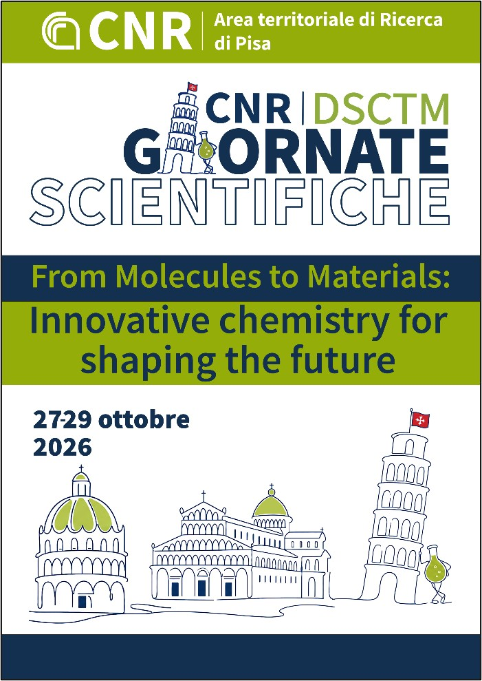

Grafica per convegniEvent & Conference Design27–29 ott 2026 · concluso ✓27–29 Oct 2026 · done ✓
👥 in team · comitato organizzatore👥 team effort · organizing committee
Giornate Scientifiche DSCTM 2026
Il convegno del Dipartimento di Scienze Chimiche e Tecnologie dei Materiali del CNR: ho curato un'identità grafica usata ovunque (locandina, programma, cartelli, schermi) e strumenti digitali che hanno funzionato per tutte e tre le giornate, anche senza internet.The conference of CNR's Department of Chemical Sciences and Materials Technology: I created one visual identity used everywhere (poster, programme, signage, screens) and digital tools that worked for all three days, even offline.
graphic design · impaginazionelayout · HTML · CSS · JS

🎨 locandina by me🎨 poster by me